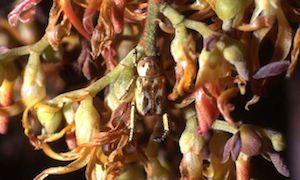
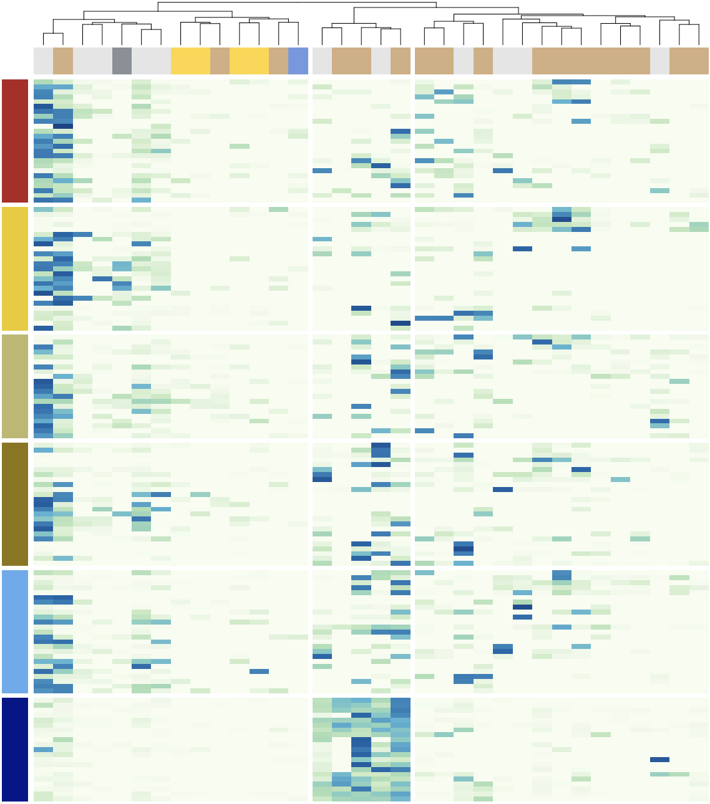
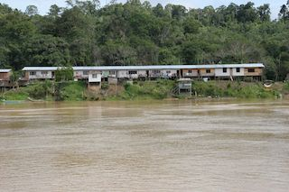

Research Topics
Plants and Pollinators
We tend to think that flowering plants cannot move around. However, they have two ways of moving: through seed and pollen. Seeds and pollen grains can be delivered over long distances by wind or animals, so-called seed dispersers and pollinators. Pollinators visit flowers for pollen and nectar. Pollen grains attached to the pollinator's body are delivered to the flowers of other individuals up to several hundreds of meters or even several kilometers away.
Mutualistic networks
Pollination is a critical outbreeding process for flowering plants. Many plants depend on animals, mostly insects, for pollination. Plants control, by different means, the movements of insects visiting them for nectar and pollen. Since the time of Charles Darwin, many biologists have studied pollination, but our understanding is still limited. For example, we do not know how drastic environmental fluctuations such as general flowering affect plant-pollinator interactions. There is high variation in pollinator specificity; many specialist species are pollinated by a few species of insects and many generalist species are pollinated by thousands of species. However, we do not know what factors determine pollinator specificity.
Forgotten flower visitors
Flower microbes
Flowers, with their nutrient-rich nectar and pollen germination beds, are ideal habitats for microorganisms (mainly fungi and bacteria). Although pathogenic microorganisms have long been known to infect agricultural crops via flowers, microbes on flowers have received little attention in pollination ecology. Microbes transferred to flowers by pollinators may include pathogens or other microbes that damage reproductive organs and the host plants. Others ,au play important roles in the fertilization and seed developments. Research from an evolutionary and ecological perspective on what microbes are on flowers and how they affect plant reproduction and relationships with pollinators has just begun. We investigate the bacterial flora on flowers and their functions by culture isolations of major bacterial groups and amplicon sequencing analyses to analyze community compositions of the microbiomes.
People and forests of Borneo
Social-Ecological systems
Most ecosystems on the planet have been seriously degraded by human activities and are now in critical condition. We still do not have a clear perspective on solving these problems, however, owing to the complexity of ecosystems and human societies and their interactions (what we refer to as the Ecosystem Network). The goal of our project Collapse and Restoration of Ecosystem Networks with Human Activity" (2006-2012) of Research Institute of Humanity and Nature, in Kyoto, were to promote understanding of the environmental problems associated with managing ecological resources and to contribute to their solution using the concept of the Ecosystem Network.